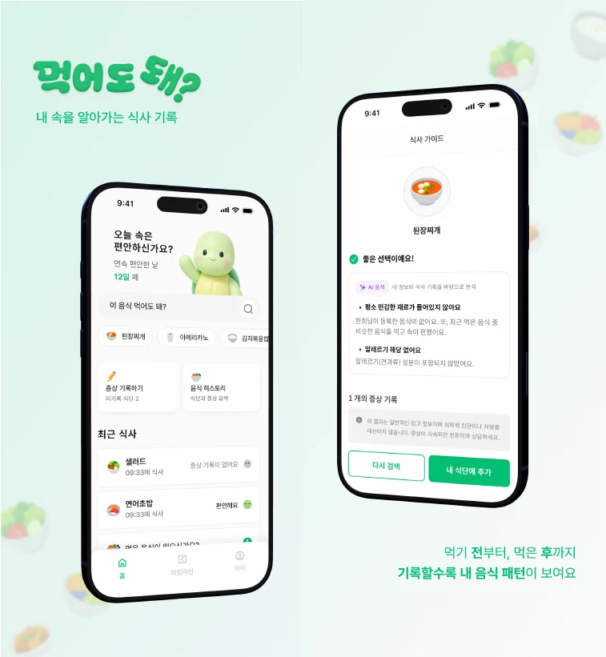
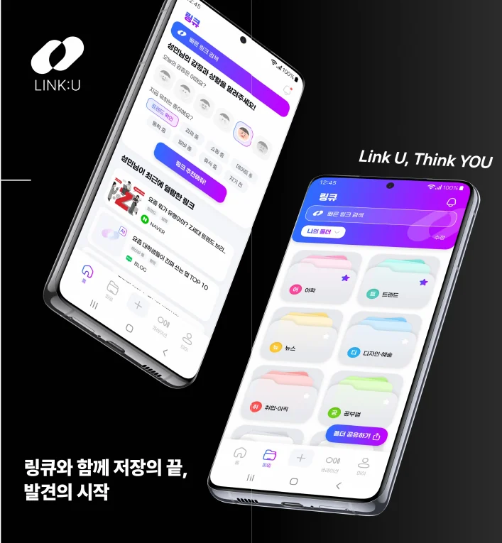
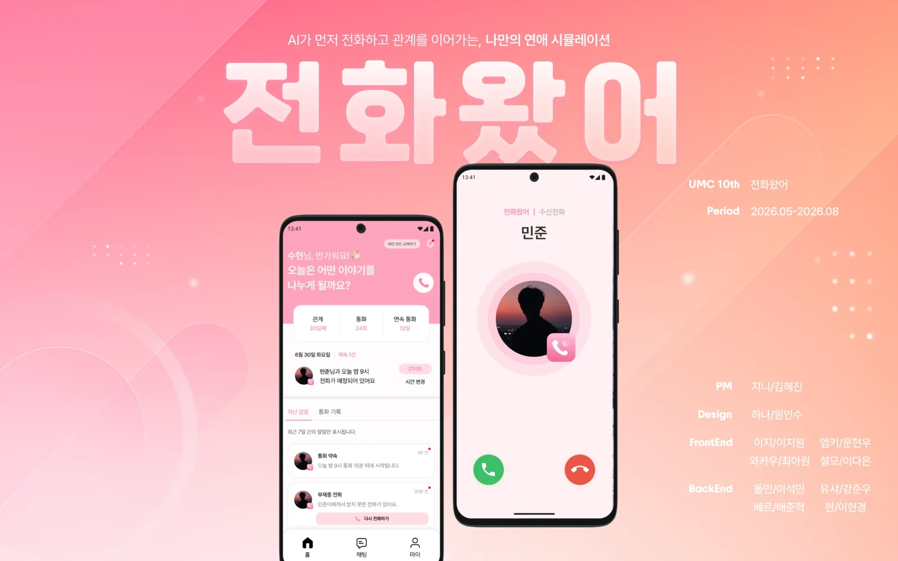

I'm Jiwon Lee, a backend developer who keeps growing and improving. I like owning a service all the way through deployment, then improving it as I run it.
지속적으로 성장하고 개선하고자 하는 백엔드 개발자 이지원입니다. 배포까지 끝까지 책임지고, 운영해보면서 개선하는 걸 좋아합니다.
I take responsibility from start to finish.
I lead team projects on and off campus and don't stop at my own role. As the Android part lead of CallFromAI and the Spring Boot part lead in UMC, I've helped solve problems even when they weren't my part.
I build things and run them myself.
Can I eat this? is built with Spring Boot and live on the App Store and Google Play. For the web service Nook I also own the AWS infrastructure. I aim to be full-stack, working on Android and infrastructure too.
I use AI, but I verify it.
I use AI actively as a development tool, while building a flow to check its comments myself before applying them.
끝까지 책임집니다.
목표한 기준에 도달할 때까지 최선을 다하고, 교내외 프로젝트에서 여러 차례 팀장을 맡았습니다. 전화왔어 Android 파트 리드, UMC Spring Boot 파트장을 거치며 제 담당이 아니어도 문제를 함께 해결하려고 노력해 왔습니다.
직접 만들고 운영합니다.
먹어도돼?는 Spring Boot로 구현해 App Store와 Google Play에서 운영 중이고, 웹 서비스 'NOOK'는 AWS 인프라까지 맡아 운영하고 있습니다. 백엔드에 국한되지 않고 Android와 인프라까지 다루는 풀스택을 지향합니다.
AI는 검증하며 씁니다.
AI를 개발 도구로 적극 활용하되, 지적을 그대로 받지 않고 코드로 직접 확인한 뒤에만 반영하는 흐름을 만들어 사용합니다.
Skills기술 스택
Backend
백엔드
- Spring Boot
- REST API design and service logic. Multi-module MSA environment.
- REST API 설계 및 서비스 로직 구현, 멀티모듈 기반 MSA 환경 개발
- Spring Security
- JWT authentication and authorization. Social login with Google, Kakao and Naver.
- JWT 기반 인증·인가 및 소셜 로그인(Google, Kakao, Naver) 구현
- Real-time
- 실시간 통신
- SSE, WebSocket, WebRTC
DevOps and infrastructure
DevOps / 인프라
- Kubernetes
- GKE and NKS. MSA deployment, pod health checks and autoscaling, StatefulSet database deployment.
- GKE, NKS. MSA 서비스 배포, Pod 헬스체크·오토 스케일링, StatefulSet 기반 DB 배포
- Terraform
- Infrastructure as code.
- 인프라 구성 코드화
- Docker Compose
- Container-based development environments.
- 컨테이너 기반 개발 환경 구성
- CI/CD
- GitHub Actions, Naver Cloud SourceBuild and SourcePipeline.
- GitHub Actions, Naver Cloud SourceBuild/SourcePipeline 기반 배포 자동화
Data and cache
DB / 캐시
- Redis
- JWT token management. Sorted-set caching of statistics for fast reads.
- JWT 토큰 관리, ZSET 기반 통계 캐싱으로 실시간 조회 성능 개선
- JPA / QueryDSL
- ORM-based data access, dynamic queries and index tuning.
- ORM 기반 데이터 관리, 동적 쿼리 및 인덱스 튜닝
Frontend
프론트엔드
- Android
- Server API integration with XML and Jetpack Compose. MVVM and MVI structures that keep UI, state management and the data-request flow separate.
- XML, Jetpack Compose로 서버 API 연동 및 MVVM, MVI 구조를 적용하여 UI, 상태 관리, 데이터 요청 흐름 분리 경험
Projects프로젝트

My role
담당
- 전체 프로젝트 구조·DB 테이블 설계 및 API 구현
- FCM 알림을 DB 예약 큐 구조로 설계해 야간 발송 방지, 실패 시 재시도
- 소셜 로그인(Google·Kakao·Apple)을 OIDC 서명 검증 방식으로 구현
- Gemini API 판정 기능에 Retry·CircuitBreaker를 적용해 실패 격리
- Railway 배포, Sentry·traceId 요청 추적, Better Stack(OTLP) 모니터링 구축
- Designed the whole project structure and DB tables, and built the APIs
- Designed FCM reminders as a DB reservation queue: no night sends, retry on failure
- Implemented social login (Google, Kakao, Apple) with OIDC signature verification
- Isolated Gemini API failures with Retry and CircuitBreaker
- Deployed on Railway, and built request tracing (Sentry, traceId) and monitoring (Better Stack, OTLP)
성과App Store·Google Play 출시(2026.08), 운영 중
ResultReleased on the App Store and Google Play (Aug 2026), running in operation
BackendSpring BootKotlinPostgreSQLGemini APITestcontainersInfraRailwayDockerSentryBetter StackCase studies케이스 스터디

My role
담당
- 프로젝트 구조·컨벤션 확립 및 에러 핸들링 구조 구축
- 회원·서재·독서 기록 DB 설계 및 API 구현, N+1을 fetch join·Query Projection으로 개선
- 홈 통계 API를 Redis ZSET 캐싱으로 재설계 (로컬 k6: 평균 −18%, p95 −20%)
- Terraform EC2 모듈 작성 및 개발 서버 import, GitHub Actions → ECR → Blue/Green 무중단 배포 구축
- Prometheus·Loki·Grafana 모니터링 구축, Alertmanager → Discord 알림 연동
- Set the project structure, conventions and error-handling structure
- Designed the DB and APIs for members, bookshelves and reading logs, and fixed N+1 queries with fetch join and Query Projection
- Redesigned the home stats API with a Redis sorted set (local k6: average −18%, p95 −20%)
- Wrote a Terraform module for EC2 and imported the dev server into it, and built zero-downtime GitHub Actions, ECR and blue/green deploys
- Built Prometheus, Loki and Grafana monitoring with Alertmanager alerts to Discord
성과웹 배포·운영 중, 데모 후 50명 이상의 사용자 피드백을 반영
ResultDeployed and running; feedback from more than 50 users after the demo went into the next round
BackendSpring BootPostgreSQLRedisSupabaseCloudflare R2InfraAWS EC2NginxDocker ComposeTerraformPrometheusLokiGrafanaCase studies케이스 스터디

My role
담당
- 개발계·운영계 서버를 분리해 AWS Terraform으로 관리하고 CI/CD 파이프라인 구축
- 프로젝트 중간 합류로 기존 로그인 로직 개선, 테스트 컨벤션 확립
- 알림 기능 데이터베이스 테이블 설계 및 API 구현, Firebase Topic 구독 기반 공지 알림 설계
- Redis + Lua Script로 토큰 블랙리스트·세션 관리, 동시 로그인 3대 제한 구현
- 월간 큐레이션 생성 로직을 Gemini API·FCM 연동 배치로 설계하고 Spring Batch로 전환
- Separated development and production servers, managed them on AWS with Terraform, and built the CI/CD pipeline
- Joined mid-project: improved the existing login logic and set the testing convention
- Designed the notification tables and APIs, and announcement notifications by Firebase Topic subscription
- Built token blacklisting and session management with Redis and Lua scripts, and a limit of three concurrent logins
- Designed the monthly curation job as a Gemini API and FCM batch, and moved it to Spring Batch
성과월간 리포트 배치를 OOM 실패에서 정상 완료로 개선, Play Store 심사 중
ResultMonthly report batch went from an out-of-memory failure to a normal run; in Play Store review
BackendSpring BootSpring BatchPostgreSQLRedisFirebaseGemini APIInfraTerraformNginxEC2Case studies케이스 스터디

My role
담당
- Android 통화 기능 전 과정 구현: 전화 진입·연결·오디오 송수신·종료·재시작·통화 후 기록
- CALL_READY 준비 신호 전에는 오디오 전송 금지(5초 타임아웃), 세대 값으로 지연 콜백 차단
- 블루투스·스피커 출력 경로를 나눠 처리, 실패 시 기본 경로로 통화 유지
- MVI·Jetpack Compose로 홈·통화 이력 화면 구현, Media3로 녹음 재생 연결
- Android 파트 리드로 일정 관리와 코드 리뷰 문화 운영 시도
- Built the whole call feature on Android: entering, connecting, audio, ending and restarting, and the record afterwards
- Sent no audio before the server’s CALL_READY signal (5 s timeout), and blocked late callbacks with a generation value
- Handled Bluetooth and speaker paths, falling back to the default so calls continue
- Built the home and call history screens with MVI and Jetpack Compose, and recording playback with Media3
- Tried to run the schedule and a code review culture as Android part lead
성과데모데이 50명 이상 시연, 통화 성공·음질·피드백 모두 좋았고 대부분 만족
ResultShown to more than 50 users at demo day; calls, sound quality and feedback were good and most users were satisfied
FrontendKotlinJetpack ComposeMVIOkHttp WebSocketAudioRecordAudioTrackMedia3Case studies케이스 스터디
GitHub activityGitHub 활동
- Days with GitHub activity, last yearGitHub에 기여한 날, 최근 1년
- 254
- GitHub contributions, last yearGitHub 기여, 최근 1년
- 2,514
- Projects this year올해 진행한 프로젝트
- 4
- Blog posts on VelogVelog 블로그 글
- 67
contributions in the last year, as of .
최근 1년간 회 기여, 기준입니다.
Education학력
Communities활동
Awards수상
Credentials자격·어학
Blog블로그
I write on my blog steadily.
꾸준히 블로그를 작성합니다.
67 posts since 2023.10, 42 of them in the last 12 months.
2023.10부터 67편, 최근 12개월 동안 42편을 썼습니다.
- 스프링 기본4 - 의존관계 자동 주입Spring
- 스프링 기본3 - 컴포넌트 스캔Spring
- 스프링 기본2 - 싱글톤 컨테이너Spring
- 독서 기록 서비스 NOOK 회고록회고
- 스프링 기본1 - IoC,DI, 스프링 컨테이너와 스프링 빈Spring
- HTTP 캐시Server
- HTTP 지식 리마인드Server
- HTTP 3XX - 리다이렉션Server